En la época prehispánica se le conocía como Cuauhquechollán "Águila que huye", después Acapetlahuacan "Lugar de esteras de caña" y posteriormente Atlixco. Los primeros pobladores del Valle de Atlixco fueron los teochichimecas. También fue asentamiento de xicalancas y estuvo sometido a la gran Tenochtitlán. Su posición geográfica hizo que fuera escenario de luchas entre los diversos grupos de indígenas que estaban asentados en los alrededores. Los pueblos de Calpan, Huejotzingo y Cholula se disputaron en diversas épocas la posesión del valle que en la llegada de los españoles se encontraba bajo el dominio de Huejotzingo. Pedro del Castillo y Cristóbal Ruiz de Cabrera fundan la Villa de Carrión, hoy Atlixco, el 22 de septiembre de 1579. En 1632 fue designada cabecera, independiente de Huejotzingo con once poblaciones a su cargo. El 3 de marzo de 1706 se convierte en una especie de señorío, otorgado por el Rey Felipe V a don José Sarmiento de Valladares concediéndole el título de primer Duque y Señor de Atlixco. Debido a los acontecimientos que se suscitaron en la época independiente, el general Nicolás Bravo, presidente suplente de la República, le dio el título de Ciudad de Atlixco el 14 de febrero de 1843.
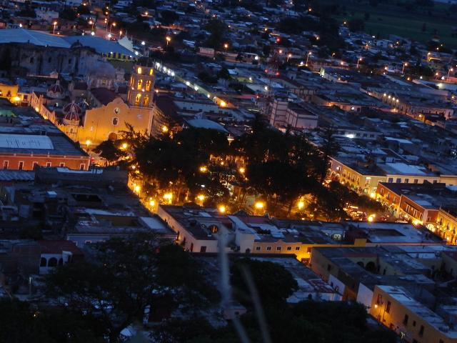En el marco de la inauguración de la Feria Nacional de los Pueblos Mágicos 2015, celebrada en la ciudad de Puebla, Atlixco recibió la denominación como “Pueblo Mágico”, lo cual contribuye a revalorar a un conjunto de poblaciones del país que siempre han estado en el imaginario colectivo de la nación en su conjunto y que representan alternativas frescas y diferentes para los visitantes nacionales y extranjeros.El secretario de Turismo a nivel federal, Enrique de la Madrid Cordero, mencionó que de las poco más de 180 solicitudes para obtener esta denominación, únicamente 28 fueron las que cumplieron con todos los lineamientos y finalmente obtuvieron esta distinción. Invitó a los “Pueblos Mágicos” a hacer un esfuerzo para conservar este título, el cual se evalúa anualmente: “cuidemos la marca, cuidemos los destinos en beneficio de sus localidades y su gente”.El funcionario afirmo que el estado tiene una identidad turística muy propia: “es una ciudad que recibió el año pasado cerca de 12 millones de visitantes y alrededor de 3 millones de pernoctas, lo cual habla de una evolución impresionante en el sector turístico”.En tanto, José Luis Galeazzi Berra, alcalde de Atlixco se dijo contento por este reconocimiento: “Es un orgullo ser atlixquense, es un orgullo hoy recibir este nombramiento… Atlixco siempre ha sido mágico, pero tenemos que darle mucho más. Atlixco tiene que ser uno de los mejores destinos turísticos de Puebla y de México”.Este año, Puebla entregó expedientes para 7 demarcaciones: Tochimilco, Tetela de Ocampo, Zapotitlán de Méndez, Huaquecula, Tepeyahualco, Huauchinango y Atlixco, de la cuales solo estos dos últimos municipios obtuvieron la designación.Más que un rescate, el título de “Pueblo Mágico” es un reconocimiento a quienes habitan hermosos lugares de la geografía mexicana y han sabido guardar para todos, la riqueza cultural e histórica que encierran.Con esto, Puebla cuenta actualmente ya con 9 “Pueblos Mágicos”: Chignauapan, Cuetzalan, Pahuatlán, Cholula, Tlatlauquitepec, Xicotepec de Juárez, Zacatlán, Atlixco y Huauchinango.
Atlixco, nombre azteca formado de Atl, Agua; Ixtla, llanura, valle (de Ixtli, cara, superficie); Tla, abundancia, y de la final co, que indica en; el conjunto forma la palabra Atl-ix-co que significa "Agua en el valle o en la superficie del suelo". Escudo de Armas Fue concedido por Felipe II en su Real Cédula, expedida en Barcelona el 29 de Septiembre de 1579. El Escudo se halla entre un pabellón de grana con galón de oro, con el cual tiene por cimera una corona con una águila explayada. En su bordadura se halla un cheurrón y uñas cotizas por las que asoma un león naciente y una faja de oro que toca la barba de un escúdete con dos leoncillos en salto y otro rampante y dos columnas verticales. En la partición siniestra del escudo figura el Arcángel San Miguel con flamígera espada por ser el Patrono de la Ciudad de Puebla, de donde salieron los fundadores Villa de Carreón en el Valle de Atlixco; en la parte media del cuartel diestro hay otra águila en color sable y abajo dos barras con un tercer recubierto de oro. Entre los Escudos del Estado de Puebla, es el único del pabellón grana. Dicho escudo está pintado en la fachada del Palacio municipal y es de mayor uso actualmente.
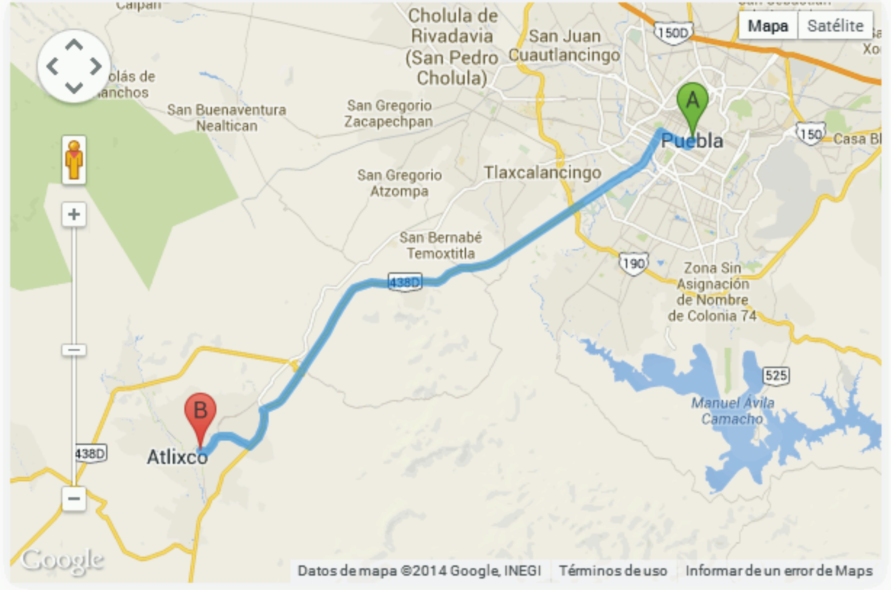Es el evento más importante a nivel estatal donde se reúnen las 11 regiones etnogeográficas con que cuenta el estado de Puebla, mágica reunión que muestra a los visitantes nacionales y extranjeros de la calidad y calidez de los atlixquenses, mostrando la riqueza de nuestra cultura y tradiciones a través de la danza y música de nuestro Estado. Las actividades inician una semana antes con la inauguración de la muestra artesanal donde loa productores poblanos exhiben y venden lo que realizan con maestría convirtiendo materiales como la palma, el papel amate, las telas y los bordados en auténticas obras de arte. Durante el transcurso de la semana se realizan actividades alternas de tipo cultural que convergen en un sólo contexto, el conservar vivas nuestras más añejas tradiciones. El sábado previo al Festival Atlixcáyotl empiezan a llegar los indígenas de los 7 grupos étnicos de Puebla tales como los popolocas, otomíes, nahuas etc., quienes realizan un desfile que culmina en el zócalo con la elección de la Xochicíhuatl (mujer flor) y sus Xochipilme (florecitas) evento en el que se demuestra la capacidad de la mujer indígena dentro de sus comunidades, pero éste no se trata de un certamen de belleza, más bien es la trascendencia que tienen las enseñanzas tradicionales y formativas en cuanto a costumbres y modos de empleo dentro de su comunidad. El día siguiente es el resultado de la hermandad de los pueblos indígenas del estad, en un marco esplendoroso vigilado por los imponentes volcanes y teniendo como escenario el Netotiloyan (lugar de la danza) en el mítico cerro de San Miguel, ofreciendo sus danzas y música a los dioses.
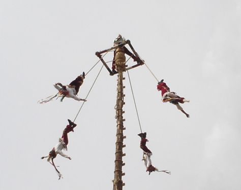Tales como los antiguos mexicanos celebraron algunas de sus fiestas mayores en dos partes que ellos llamaron la fiesta tontü (chica) y a los veinte días el huey (gran) fiesta, también fue concebido el Festival Atlixcayotl. De esta misma manera surgieron el Atlixcayotontli (Atlixcayotl Chico) y el Huey Atlixcayotl (Gran Atlixcayotl.) Sin embargo estas calificativas no significan que el uno sea más "chico" y el otro más "grande"; ambos se componen de danzas, bailes y ritos tradicionales de trece comunidades que intervienen en un programa con una duración de aproximadamente dos horas y media. Los dos eventos dan principio con los Bailes de Convite en que las Chinas Atlixqueñas y los Charros de a pié invitan al público a la fiesta. Ambos eventos concluyen con el Rito del Palo Volador y se remata la fiesta con el consabido Fin de Fiesta. En éste las autoridades, los pueblos participantes y el público en general toman posesión del NetotUoyan (Plazuela de la danza) para ejecutar el Tlaxcalteco-Xochipitzahuac y bailar acompañados de la música mexicana conocida por todos. El Atlixcayotl es un festival de formación reciente (1965) pero compuesto de música, cantos, danzas y rituales, en gran parte indígenas, algunos de mucha antigüedad. Esos fueron rescatados mediante la investigación de campo, y conservados gracias a su reevaluación y su presentación periódicamente en este festival. Se realiza el Atlixcayotl en el mes de septiembre durante los cuatro domingos consecutivos. Comenzando el primer domingo del mes sale el Primer Convite por las calles de Atlixco. El siguiente domingo (segundo domingo del mes de septiembre), se presenta el Atlixcayotontli en el Cerro de San Miguel organizado por la Asociación Civil Atlixcayotontli y el H. Ayuntamiento de Atlixco conjuntamente.
Las representaciones de las danzas, bailes y rituales en este evento se basan en las investigaciones de campo, los consejos de los ancianos de cada población, la motivación de los pueblos participantes y las aportaciones para llevarlo a cabo en forma de efectivo, especies y servicios, proporcionados por el pueblo de Atlixco conjuntamente con las Autoridades Municipales. Las danzas y bailes son interpretados por los mismos oriundos de los pueblos y barrios de la comarca atlixquense, sin mistificaciones. Sigue el tercer domingo de septiembre con el Segundo Convite, y se realiza el Huey Atlixcayotl el último domingo de septiembre en el mismo Cerro de San Miguel, organizados por el Patronato Estatal del Huey Atlixcayotl y con las aportaciones del gobierno del Estado de Puebla y el H. Ayuntamiento de Atlixco en conjunto. Atlixcayotl es un escaparate en donde los pueblos, mestizos, criollos e indígenas por igual, recuperan las valores perdidos para reconocerse a si mismos; es museografía vivo mediante el cual se rescate las valores ancestrales, reevaluándolas para su continua servicio a la cultural local, nacional y universal; es un foro popular en donde los pueblos pueden presentarse, tal como eran, y tal como son en el fondo del corazón y poder hablar de tú a tú con sus autoridades.
Es una festividad dedicada a los Jóvenes que se celebra enAbril con el propósito de mantener presentes nuestras tradiciones y costumbres.El festival de la juventud se inicio en 1996 el 21 de marzo con el trabajo de campo de Cayuqui Estage Noel y a iniciativa (y auspicio) del Ing. Jose Luis Galeazzi Berra.En este festival, cuya particularidad consiste en que los participantes son jovenes, y uno que otro adulto pero eso si, con el corazón muy joven, se reunen canto, danza y alegria, para que en el Netotiloayan- Lugar de la Danza- todos los Atlixquenses invitados, se integren para de esta forma tan nuestra convidar de la algaravia de nuestro pueblo, ya que ademas de demostraciones de jubilo y algarabia, las danzas y bailes tienen un caracter ritual al ser realizadas en fiestas patronales y con dedicación especial en obtener una "gracia"- milagro- o bien agradecer los favores concedidos,pero esto no impide la diversión sino todo lo contarrio Estamos ampliando esta información esta información
Exposición y venta de flores y plantas que tambien cuenta con la presencia de de diferentes expositores de insumos y productos relacionados con la industria floral. Esta expo se realiza a principios del mes de Julio.Tambien destaca la Feria de la Noche Buena en en su tercera emisión se logró una producción de un millón 600 mil plantas.La Expo Flores y Plantas cuenta con un espacio de 2 mil 500 metros cuadrados para más de 150 expositores de la localidad y del interior de la república.Son muchas las razones por las que Atlixco es la flor más bella de Puebla y de México, y estas son algunas de ellas:Somos uno de los municipios uno de los municipios que produce una mayor cantidad de rosales Somos el primer lugar en cuanto a la producción de flores en maceta Nos convertimos en el principal productor de flor de Nochebuena durante el 2003 y 2004 al obtener 1 millón 200 mil flores En Semana Santa creamos el mercado de flores más grande del estado alcanzándose una venta de 2.5 millones de maletas de flor de temporada y de otras variedades Considerado como uno de los bancos de germoplasma de especies mexicanas de orquídeas más grande de México, el rancho La Joya alcanza un nivel anual de producción de 5 mil plantas que se exportan a países como Suiza, Alemania, Dinamarca e Inglaterra. La Joya posee un inventario de 200 mil plantas y cerca de 500 diferentes especies mexicanas de orquídeas, y tiene un laboratorio de cultivo de tejidos en el que se reproducen orquídeas híbridos y especies mexicanas algunas de ellas en peligro de extinción. El vivero Bazar de Plantas contiene una de las colecciones privadas de bonsáis más grandes de la república mexicana al tener en existencia más de 6 mil especies de calidad al año. Por lo espectacular de la colección de arte bonsái del Bazar de Plantas, este vivero obtuvo se hizo acreedor a tres premios internacionales obtenidos en Japón en los años 2000, 2001 y 2003. La colonia Cabrera, es la principal zona de producción de flores y plantas en viveros, la cual cuenta con 300 mil metros cuadrados de áreas techadas para flor y con otras 500 mil metros cuadrados a cielo abierto. El incremento que esta actividad ha tenido en los último años es considerable, ya que sin en los años 60’s nació con la producción de rosal en bolsa y con la comercialización de algunas plantas de ornato en 5,000 m2, a principios de los 90’s aumentó a 50,000 m2, registrándose en 1994 el mayor despegue para llegar hasta este momento a 300,000 m2 de invernaderos.
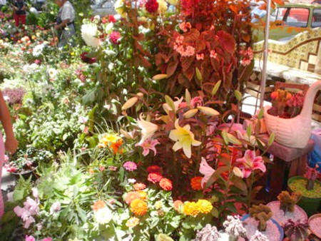Las Fiestas de Reyes es una actividad que nació en Atlixco para el país. Su meta cumplida es que ninguno de los 40 mil niños de escasos recursos que tenemos en el municipio se quede sin recibir un juguete. Las Fiestas de Reyes de Atlixco fueron consideradas por el Fondo de las Naciones Unidas para la Infancia, la UNICEF, y el DIF Nacional como uno de los 17 mejores proyectos de la república mexicana que destacan la respuesta a una amplia convocatoria a voluntarios, pues en los trabajos participan más de mil ciudadanos, servidores públicos y empresarios incluso del extranjero.Dentro de las Fiestas de Reyes, el Festival de la Ilusión tiene el objetivo de despertar en los niños la imaginación y hacer que ellos inviten a los Reyes Magos a visitar Atlixco. Este festival lleno de magia, música, colorido y fuegos piroctécnicos se realiza en la Plazuela de la Danza del Cerro de San Miguel, donde llegado el momento los pequeñitos lanzan sus globos al cielo con las cartas que dirigen a los Reyes Magos. El Festival de la ilusión logra reunir a más de 5 mil asistentes, entre papás y niños, con lo que se convierte en un gran festival.Voluntarios y empresas preparan con anticipación la llegada de los Reyes quienes recorren las principales calles de la ciudad acompañados de payasos, personajes animados y carros alegóricos perfectamente iluminados que aluden a temas infantiles.
El último sábado de Febrero se reúnen hasta 5 mil personas en el Cerro de San Miguel para observar el cielo. La organización de La Noche de las Estrellas realiza cursos para capacitar asesores en el manejo de telescopios diversos y en la observación de la bóveda celeste con el objetivo de que estos conocimientos se reproduzcan en todas las localidades. Igualmente se promueven cursos y talleres de astronomía y telescopios para toda la familia.
Semana Santa
En esta temporada se adornan las calles de Nexatengo con flores, hojas de pino y alfombras de aserrín. Se realiza la procesión del Sr. Jesús de Nazareth en donde más de 8 mil personas caminan 8 km.
El segundo fin de semana de Agosto se celebra uno de los platillos típicos de nuestra región, la cecina, en un ambiente familiar amenizado con eventos artísticos.
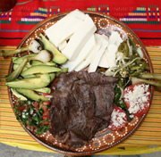
Durante todo el mes de Septiembre se celebran diferentes actividades cívicas, artísticas deportivas y culturales. Una de las más populares es la cabalgata que se celebra el día 14 con más de 300 jinetes que recorren las principales avenidas de la ciudad. La cabalgata culmina en una verbena popular en el zócalo de la ciudad. Además, del espectáculo de pirotecnia el día 15 después del tradicional grito de independencia. 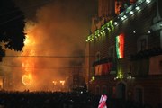
“La fiesta chica de la gran familia Atlixquense”, tiene lugar en el Cerro de San Miguel dos fines de semana antes del Huey Atlixcáyotl; es decir, el segundo domingo del mes de Septiembre. En ella se reúnen danzantes de las tres regiones que convergen en el valle: La Región del Valle, La Región de La Tierra Caliente y la Región de los Volcanes (también conocida como la región de la Sierra Nevada).
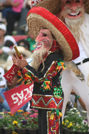
“La Gran Fiesta de Atlixco”. Con una tradición de más de 40 años de música, danza y artesanías de las 11 regiones etnográficas del Estado de Puebla. Fue declarado Patrimonio Cultural del estado de Puebla el 29 de Julio de 1996. Hoy es la gran fiesta de los poblanos. Se celebra el último domingo de Septiembre en el Cerro de San Miguel.
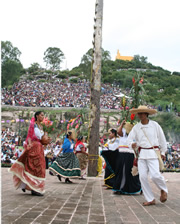
El 2 de Noviembre la Ciudad de Atlixco se viste de calaveras para recorrer las principales calles en un festivo y colorido desfile que busca preservar nuestras tradiciones populares.
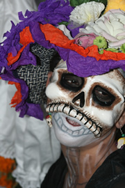
A partir del 20 de Noviembre los mejores productores de la región exponen y venden una variedad enorme de plantas de Nochebuena a precios competitivos en mayoreo y menudeo.
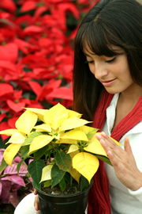
Por primera vez la ciudad de Atlixco se iluminará desde el 20 de Noviembre con espectaculares figuras que adornarán calles y avenidas.
Lo más atractivo es su portada barroca de argamasa, que probablemente marcara el inicio de este estilo a nivel local. El interior tiene planta de cruz latina con bóveda y cúpula de gajos. En el presbiterio se encuentra un magnífico retablo dorado estilo barroco salomónico. Las pinturas son de Jerónimo Zendejas y representan la vida de San Francisco.
Contando con el mejor clima del mundo, Atlixco ofrece a sus visitantes balnearios y parques acuáticos donde podrá disfrutar albercas, toboganes, servicios de alimentos y áreas de acampado para disfrutar en familia. Encontrará varias alternativas en Atlixco y sitios cercanos como Huaquechula y Metepec.
Su construcción se inició siendo guardián fray Toribio de Benavente, Motolinia, quedando situada en las faldas del cerro de San Miguel, con un pequeño atrio al frente. El interior del templo es de una sola nave cubierta con bóvedas de nervaduras góticas. El retablo mayor es de madera tallada y dorada, obra de la primera mitad del siglo XVIII, los óleos con escenas de la vida de la Virgen son del maestro pintor Francisco Martínez también datan del siglo XVIII.
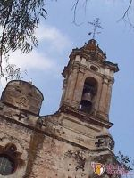
Un platillo por el que después de probarlo querrás volver Atlixco, la tradicional cecina de Atlixco.Desde hace ya tiempo, nuestra ciudad se ha dado a conocer por la exquisita cecina que se puede encontrar por los pasillos del mercado y en algunos restaurantes de la ciudad. Esta forma de preparar la carne de res posee el sabor de Atlixco, que por su delgadez es perfecta para servir en una tortilla acompañada de aguacate, queso, crema y una rica salsa.